S15 — Onion काटते वक़्त आँसू क्यों?
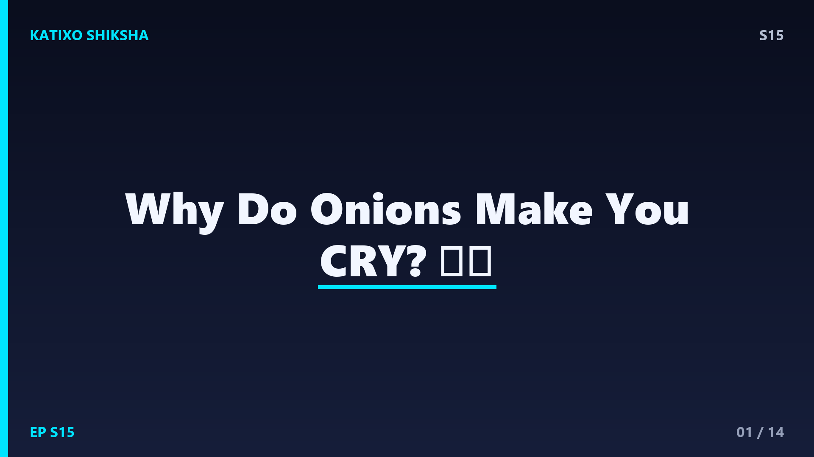
Slide 1दोस्तों, एक छोटा सा प्याज... इतना powerful कि बड़े-बड़े लोग रोने लगते हैं! कभी सोचा है, knife चलाते ही आँखों से धारें क्यों बहने लगती हैं? और मज़ेदार बात ये कि प्याज तुम्हें hurt नहीं करना चाहता, फिर भी रुला देता है! आज Katixo Shiksha पर हम इसी मज़ेदार chemistry को crack करेंगे। मैं तुम्हें step-by-step बताऊँगा कि onion के अंदर कौन से secret chemicals छिपे हैं, वो gas कैसे बनती है, और सबसे ज़रूरी, बिना रोए प्याज कैसे काटें! तो ready हो जाओ, चलो शुरू करते हैं!
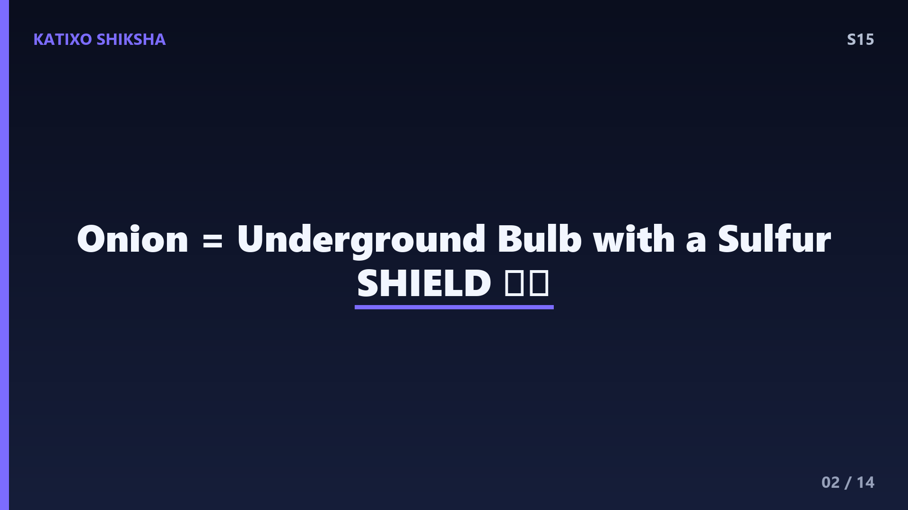
Slide 2सबसे पहले समझो कि onion रहता कहाँ है। प्याज ज़मीन के नीचे उगता है, यानी ये एक underground bulb है। मिट्टी में रहते हुए इसके सामने एक बड़ी problem होती है, दोस्तों, insects, fungus और जानवर इसे खा सकते हैं! तो प्याज ने खुद को बचाने के लिए एक तगड़ा defense system बनाया। ये मिट्टी से sulfur यानी गंधक absorb करता है और उसे special sulfur compounds की तरह store करता है। ये compounds onion का chemical weapon हैं। जब कोई pest इसे काटे या चबाए, तो ये weapon activate हो जाता है। मतलब आँसू दरअसल एक self-defense trick का side effect हैं!
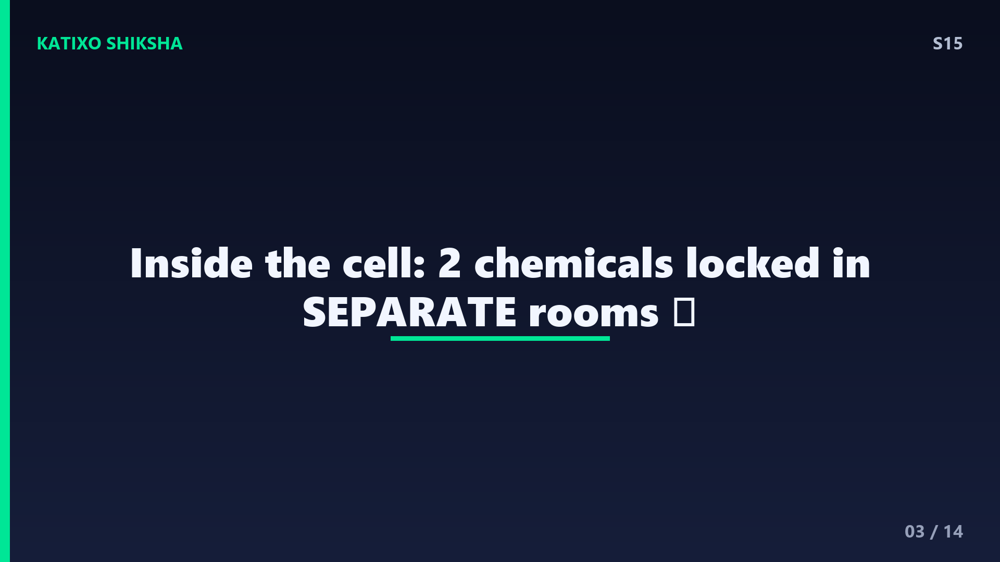
Slide 3अब असली खेल onion के cells के अंदर है। हर प्याज लाखों tiny cells से बना है, और हर cell के अंदर दो चीज़ें अलग-अलग कमरों में बंद रहती हैं। पहली, enzymes, जिनमें एक खास enzyme है alliinase. दूसरी, sulfur वाले amino acid compounds जिन्हें sulfoxides कहते हैं, जैसे isoalliin. ये दोनों जब तक अलग रहते हैं, कुछ नहीं होता, onion बिल्कुल शांत रहता है, कोई smell नहीं, कोई आँसू नहीं। समझो जैसे दो chemicals को अलग-अलग बोतलों में बंद रखा गया हो। खतरा तभी शुरू होता है जब ये दोनों आपस में मिल जाएँ। और मिलाने का काम करता है, तुम्हारा knife!
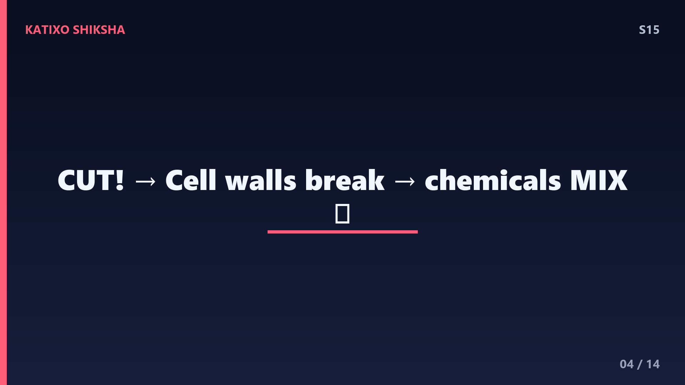
Slide 4अब उठाओ knife और onion पर चलाओ! जैसे ही तुम काटते हो, cells की दीवारें यानी cell walls टूट जाती हैं। और जो दो chemicals अलग-अलग कमरों में बंद थे, वो आपस में मिल जाते हैं। ये बिल्कुल वैसा है जैसे दो बोतलें फूट जाएँ और उनके liquids mix हो जाएँ। अब enzyme alliinase को मौका मिल जाता है काम करने का। याद रखो, ये reaction तुरंत शुरू होती है, milliseconds के अंदर! इसीलिए कभी-कभी काटते ही फटाक से आँखें जलने लगती हैं। तो असली villain knife नहीं, बल्कि वो chemistry है जो काटने पर unlock होती है, समझे दोस्तों?
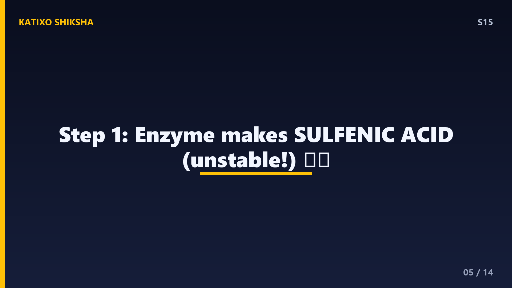
Slide 5अब chemistry का पहला step देखो। जब alliinase enzyme उन sulfur compounds से मिलता है, तो वो उन्हें तोड़कर एक नया chemical बनाता है जिसे कहते हैं sulfenic acid. लेकिन रुको, यही असली tear-gas नहीं है! ये तो बस बीच का एक intermediate product है, जैसे recipe में आधा बना हुआ dish. ये sulfenic acid बहुत unstable होता है, यानी ये ज़्यादा देर ऐसे नहीं रह सकता। इसे आगे बदलने के लिए एक और special enzyme की ज़रूरत होती है। तो अब तक हमारे पास एक reactive chemical तैयार है, जो अगले step में असली रुलाने वाली gas में बदलने वाला है। बस थोड़ा और रुको!
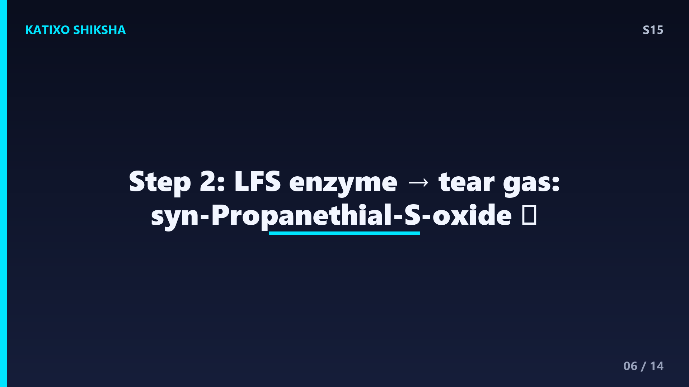
Slide 6अब आता है असली mastermind enzyme, जिसका नाम है lachrymatory-factor synthase, short में LFS. ये enzyme उस sulfenic acid को पकड़ता है और उसे बदल देता है एक volatile gas में, जिसका नाम है syn-Propanethial-S-oxide. यही है असली lachrymatory factor यानी रुलाने वाला chemical! Volatile का मतलब है ये gas आसानी से हवा में उड़ जाती है। तो काटते ही ये gas onion से निकलकर ऊपर की तरफ हवा में तैरने लगती है, सीधे तुम्हारे चेहरे की ओर। यही वो invisible attacker है दोस्तों, जिसे तुम देख नहीं सकते, पर महसूस ज़रूर करते हो जब आँखें जलने लगती हैं!
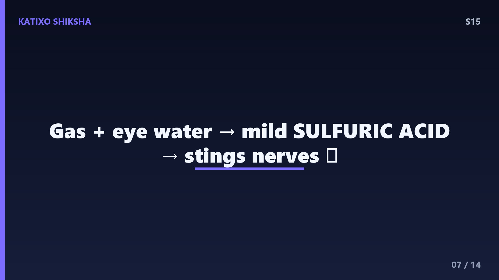
Slide 7अब ये gas तुम्हारी आँखों तक पहुँचती है। तुम्हारी आँख की surface हमेशा हल्की गीली रहती है, उस पर पानी यानी moisture की एक पतली layer होती है। जैसे ही ये syn-Propanethial-S-oxide gas उस पानी से मिलती है, एक नई reaction होती है और बनता है थोड़ा सा mild sulfuric acid! घबराओ मत, ये बहुत कम मात्रा में होता है, ये तुम्हारी आँख को नुकसान नहीं पहुँचाता। पर ये हल्का acid तुम्हारी आँख के cornea में मौजूद sensitive nerve endings को irritate कर देता है। यानी gas खुद नहीं चुभती, बल्कि आँख के पानी से मिलकर जो acid बनता है, वही जलन का असली कारण है!
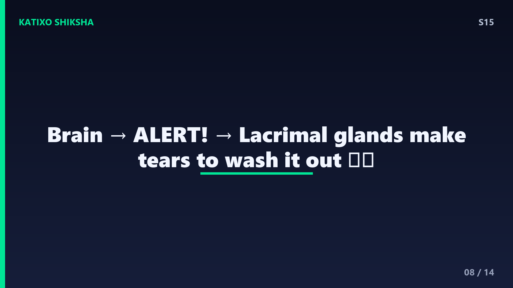
Slide 8अब तुम्हारा brain action में आता है! जैसे ही cornea की nerve endings को irritation का signal मिलता है, वो तुरंत brain को alert भेजती हैं, खतरा है, आँख में कुछ चुभ रहा है! Brain फटाफट एक command देता है तुम्हारी lacrimal glands को, जो आँख के ऊपरी हिस्से में होती हैं। ये glands तुरंत पानी यानी आँसू बनाने लगती हैं। इन आँसुओं का एक ही मकसद है, उस irritant को धोकर बाहर निकाल देना। ये automatic होता है, तुम्हें सोचने तक की ज़रूरत नहीं पड़ती। यही reason है कि चाहकर भी तुम इन आँसुओं को रोक नहीं पाते, क्योंकि ये पूरी तरह reflex है!
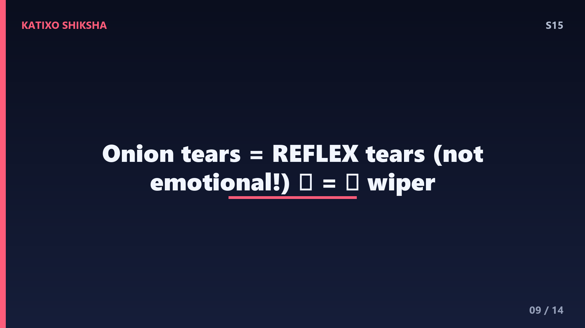
Slide 9एक मज़ेदार fact दोस्तों, ये जो प्याज वाले आँसू हैं, ये reflex tears कहलाते हैं। हमारी आँखों से तीन तरह के आँसू निकलते हैं, basal tears जो आँख को हमेशा गीला रखते हैं, emotional tears जो दुख या खुशी में आते हैं, और reflex tears जो किसी irritant से बचाने के लिए निकलते हैं। प्याज, धुआँ या धूल, ये सब reflex tears trigger करते हैं। तो technically, जब तुम onion काटते हुए रोते हो, तो तुम emotional नहीं हो रहे, तुम्हारी आँख बस सफाई का काम कर रही है! ये एक तरह का natural windshield wiper system है, जो खुद-ब-खुद चालू हो जाता है।
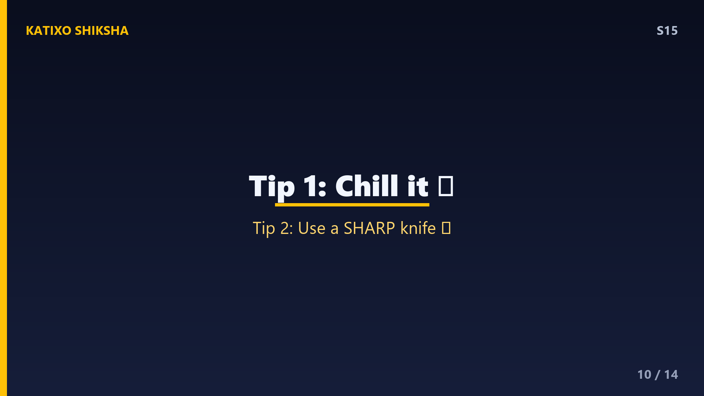
Slide 10अब सबसे काम की बात, बिना रोए प्याज कैसे काटें? पहला trick, काटने से पहले onion को 15 मिनट fridge में ठंडा कर लो। ठंडक से वो chemical reaction और gas का उड़ना दोनों slow हो जाते हैं, यानी कम gas, कम आँसू! दूसरा, sharp knife इस्तेमाल करो। तेज़ चाकू कम cells को damage करता है, तो कम chemicals release होते हैं। Blunt knife cells को कुचल देता है और ज़्यादा gas निकलती है। तो याद रखो, ठंडा onion और तेज़ knife, ये दो आसान tricks ही आधी जंग जिता देते हैं। है ना smart science?
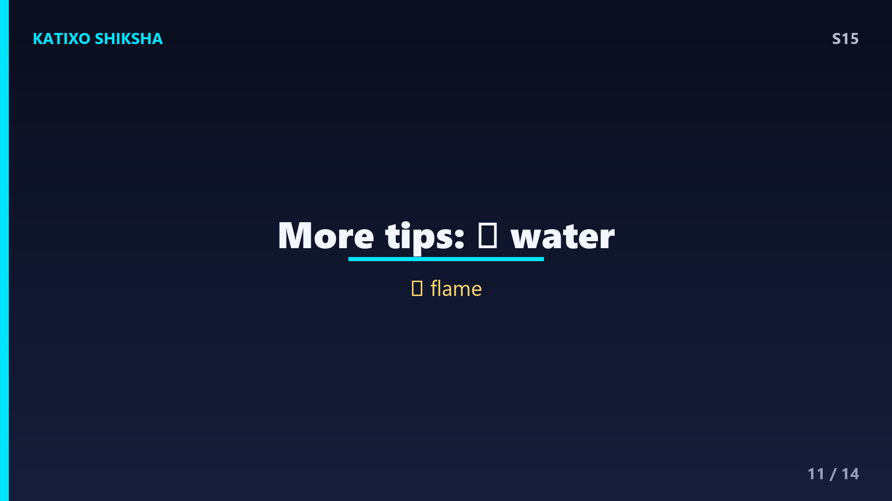
Slide 11और tricks भी हैं दोस्तों! तीसरा, onion को running water के नीचे या बहते पानी के पास काटो, पानी उस gas को घोलकर हवा में पहुँचने से पहले ही पकड़ लेता है। चौथा, gas flame या मोमबत्ती के पास काटो, आग उस gas को थोड़ा burn या break कर देती है। पाँचवाँ, पास में fan चला दो, fan gas को तुम्हारी आँखों से दूर उड़ा देता है। और सबसे ultimate, goggles पहन लो, तब तो gas आँखों तक पहुँच ही नहीं पाएगी! Professional chefs अक्सर इन्हीं tricks का combo use करते हैं। तो अगली बार kitchen में इनमें से कोई एक ज़रूर try करना!
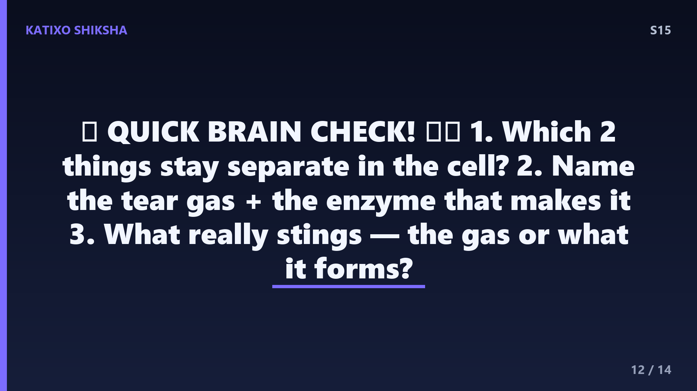
Slide 12चलो अब Quick brain check! तीन सवाल, थोड़ा दिमाग लगाओ। Question one, onion के cells में वो दो चीज़ें कौन सी हैं जो काटने से पहले अलग-अलग बंद रहती हैं? Question two, वो असली रुलाने वाली volatile gas का नाम क्या है, और कौन सा enzyme उसे बनाता है? Question three, आँख में जलन का असली कारण क्या है, gas खुद या उससे बनने वाला कोई चीज़? Video को अभी pause करो, थोड़ा सोचो, और अपने जवाब मन में या copy में लिख लो। तैयार? जब सोच लो तो आगे बढ़ो, मैं अभी सारे answers बता देता हूँ। Pause करो, अभी!
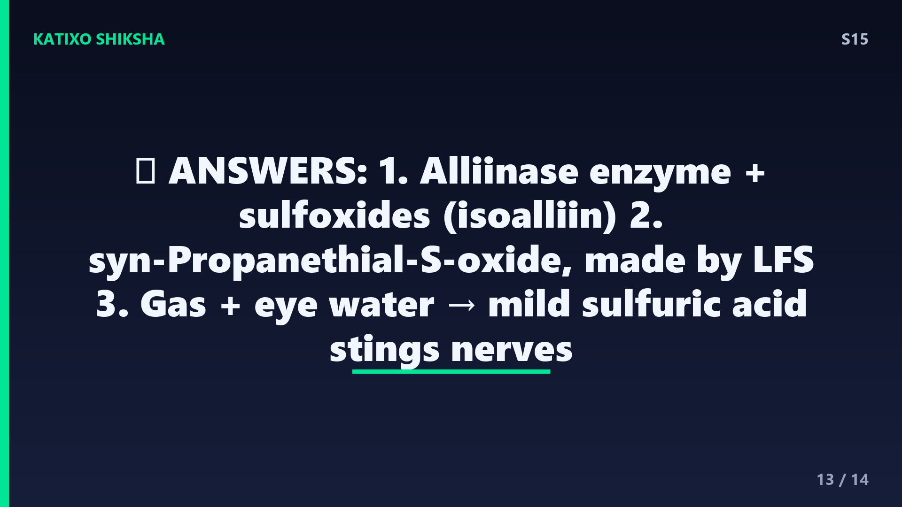
Slide 13चलो answers देखते हैं! Answer one, onion के cells में अलग-अलग बंद रहते हैं enzymes यानी alliinase, और sulfur वाले compounds यानी sulfoxides जैसे isoalliin. काटने पर ये मिलते हैं, तभी खेल शुरू होता है। Answer two, असली रुलाने वाली gas है syn-Propanethial-S-oxide, और उसे बनाने वाला enzyme है LFS, यानी lachrymatory-factor synthase. Answer three, जलन की असली वजह gas खुद नहीं, बल्कि वो gas जब आँख के पानी से मिलती है तो mild sulfuric acid बनता है, और वही cornea की nerves को irritate करता है। कितने सही हुए? तीनों? Superb, तुम तो onion scientist बन गए!
Slide 14तो दोस्तों, आज हमने सीखा कि onion underground में sulfur store करता है defense के लिए, काटने पर enzymes और compounds मिलते हैं, LFS एक volatile gas बनाता है, वो आँख के पानी से mild acid बनाकर nerves को irritate करती है, और brain reflex tears trigger कर देता है! Ek mind-blowing fun fact, scientists ने LFS enzyme को कम करके एक tearless onion भी बना दिया है, जिसे काटने पर रोना नहीं आता! अगला episode बहुत जल्द आ रहा है, और तुम बताओ, comment में लिखो कि next कौन सा topic चाहिए? Channel को like और Subscribe करना मत भूलना! मिलते हैं अगले video में, Bye!